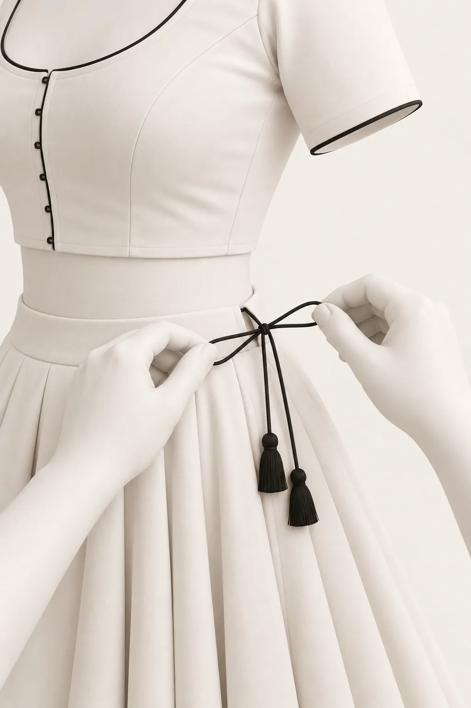

01
Measure
Every garment starts with the body. You learn where the tape goes, how snug to pull it, and how to note the numbers a pattern is drafted from.
From the syllabus: How to take body measurements
Hero · placeholder
Placeholder copy. A short line on the academy, the teacher and the studio goes here.



The course
Every garment starts with the body. You learn where the tape goes, how snug to pull it, and how to note the numbers a pattern is drafted from.
From the syllabus: How to take body measurements
Those numbers become a pattern. With a ruler and pencil you draft the basic bodice block, the shape every blouse, kurta and sleeve is built from.
From the syllabus: Basic bodice block · kurta and sleeve drafts
You sit down at an industrial sewing machine and practise until the needle, the speed and the fabric move together in straight, even lines.
From the syllabus: Machine practice · cord piping · darts
Your first real garment: a fitted blouse, darted to the body, piped at the neck and closed with hooks you set yourself.
From the syllabus: Dart and princess cut blouses · hooks and eyes
Then the full outfit. You draft and stitch a flared lehenga, gather it at the waist and finish it with a dori and tassels.
From the syllabus: Panel, umbrella and pleated lehenga · tassel making
Full syllabus
Both courses run in the studio on industrial machines. The 6-month course adds more drafts, aari work, boutique management and a local market visit.
WhatsApp or call 93535 62706